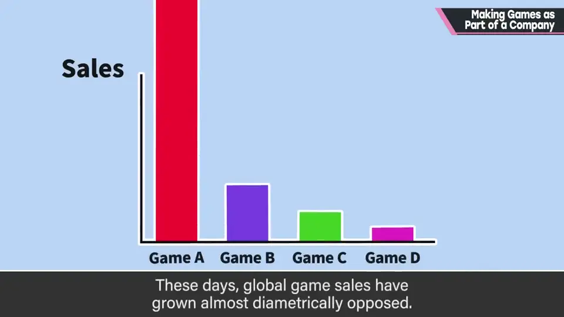
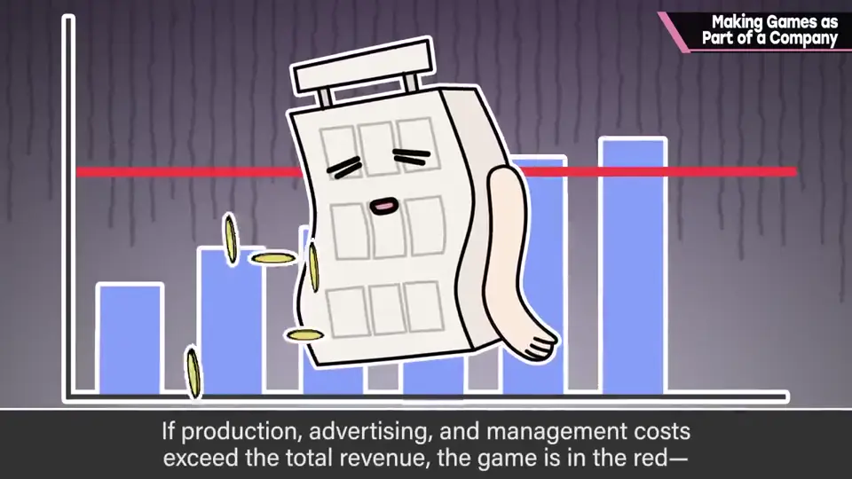
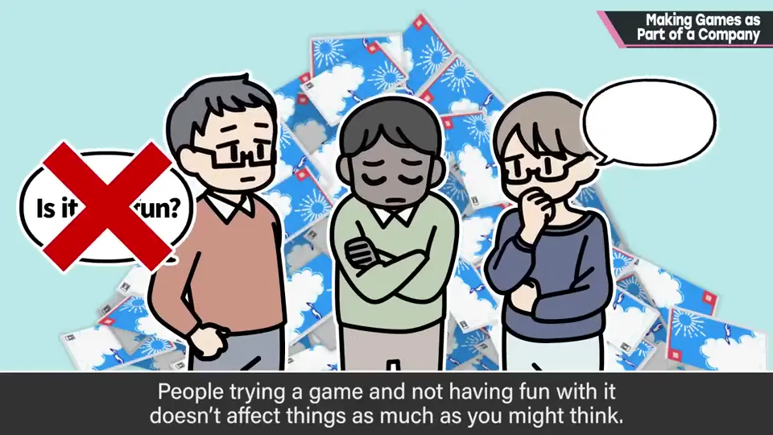
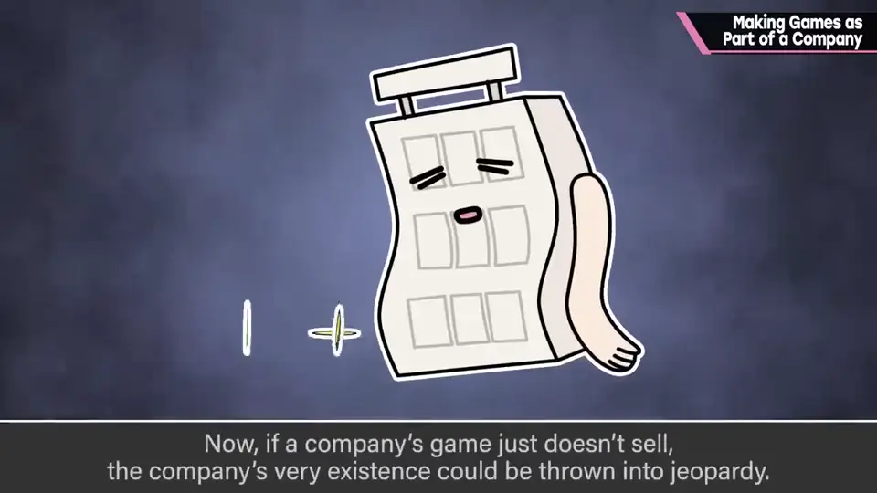
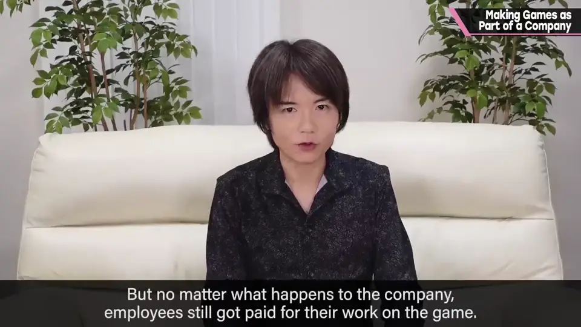
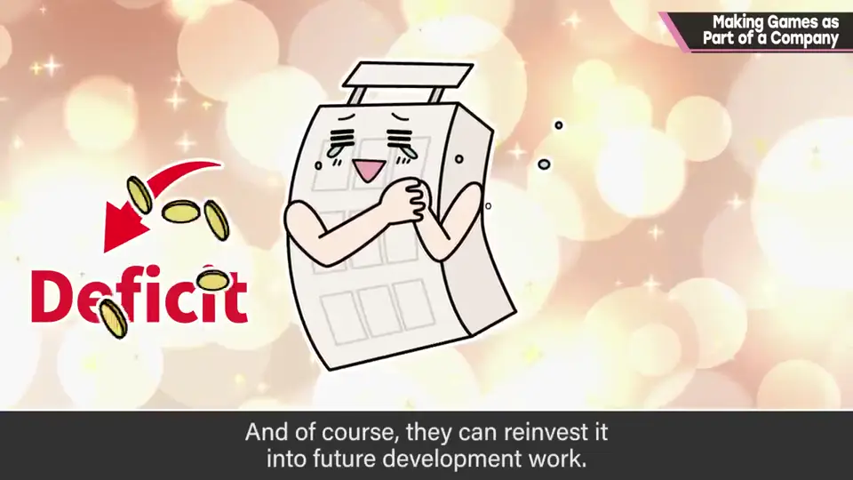
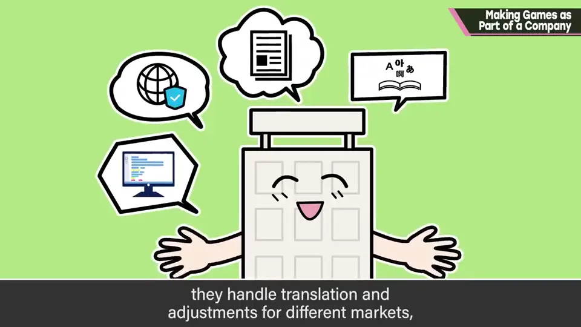
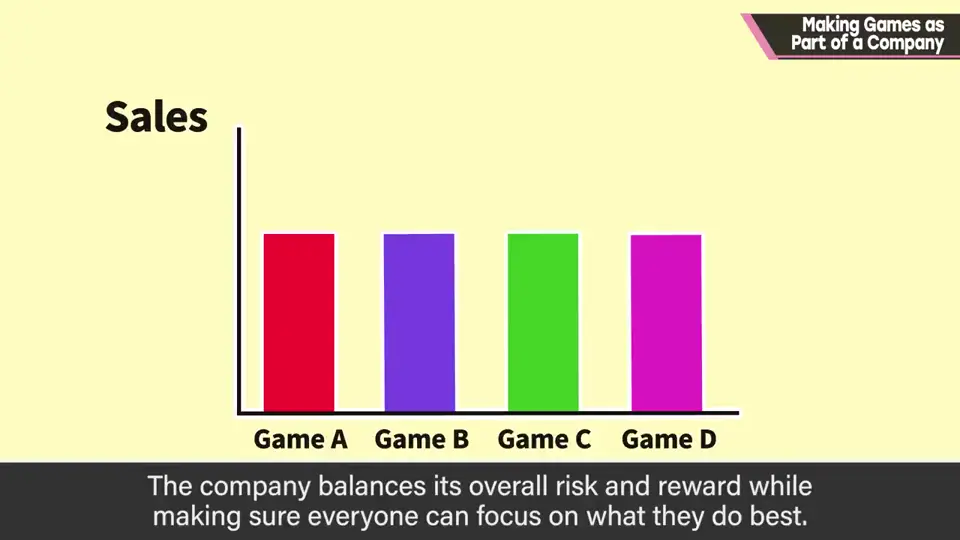
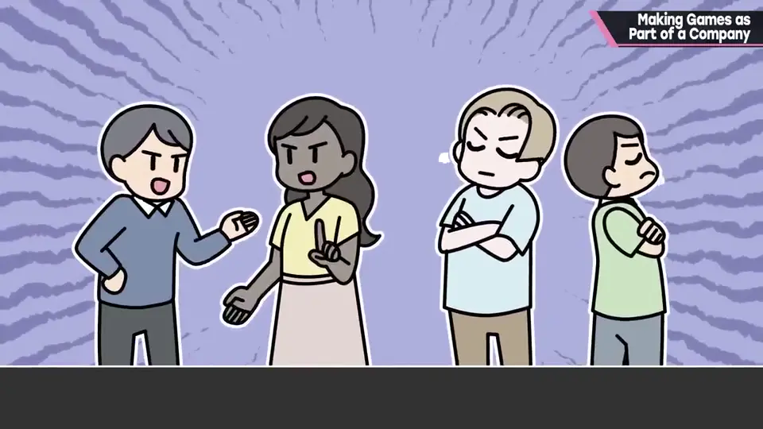
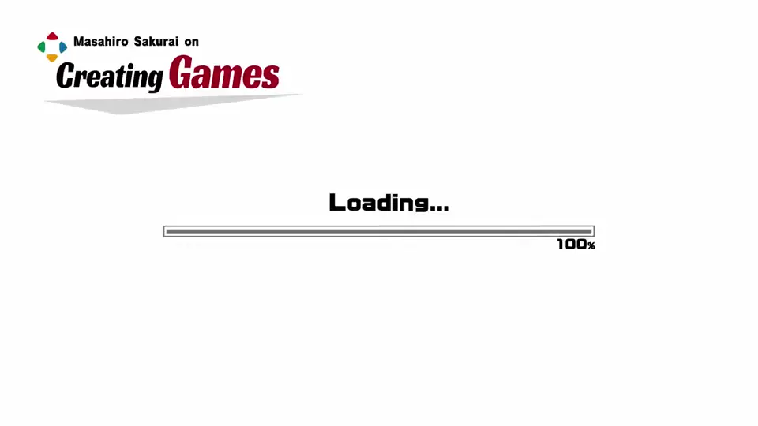

速览
相对于个人做游戏，你怎么看在公司做游戏？作为公司员工，最难得的是工资确实会发；反过来，即使做出成果，工资和奖金也不会与销量成比例，这没办法。游戏销量在全球日趋两极化：卖得好的非常好，卖不好的怎么都卖不出去。制作费、宣传费、运营费超过销售额就是赤字，会吃掉公司资产。只要不是一个人做一个人卖，卖不好就不能说是谁的错：「玩起来不好玩」作为原因的优先度比想象的低（毕竟有人玩过），也可能是外观、标题、宣传不足、竞争作品、发售时机、对象机种等各种原因，哪部作品都不能断言是谁的责任。做的东西怎么都卖不出去，公司的存续就会受威胁，可能倾斜或倒闭；但即使在那种情况下，劳动者的工资仍有保障——这是温柔的世界，责任在公司。反过来，畅销作的收入用来填补赤字，也用于面向未来的开发准备（发行商和开发商又有不同）。公司的游戏制作不只是「做」：提供场地和器材、培养新人、开发工具的基础研究、中间件与授权管理、翻译、面向各国的调整，要考虑的事堆积如山，越是大公司这些成本越高。公司把风险与回报平均分配，让每个人专注于擅长的领域。不同的人一起运营也会有摩擦：立场、见解不同，可能闹得不愉快。但公司是自己支撑、也被支撑的地方，至少也是自己选的路，所以别有「被迫工作」的意识，互相帮助推进最好。作为自由职业者的他说这些也许毫无说服力（「你还好意思说」），但他常与其他公司联合做事，也会好好上班、遵守规则。公司是互相支撑、彼此彼此，为了互相激发长处，一起协力吧。
1. 工资与销量 0:03
相对于个人做游戏，你怎么看在公司做游戏？作为公司员工做游戏，最难得的是工资会确实发下来。
反过来，即使做出成果，工资和奖金也不会与销量成比例——这也没办法。


游戏销量在全球日趋两极化：卖得好的非常好，卖不好的怎么都卖不出去。制作费、宣传费、运营费等超过销售额就是赤字，会吃掉公司的资产。
2. 卖不好是谁的错？ 0:52
只要不是一个人做、一个人卖，卖不好就不能说是谁的错。


「玩起来不好玩」作为原因，优先度比想象的低——毕竟有人玩过了。也可能是外观、标题、宣传不足、竞争作品、发售时机、对象机种……原因各种各样，哪部作品都不能断言是谁的错。
3. 责任在公司 1:16
做的东西怎么都卖不出去，公司的存续就会受到威胁，可能倾斜甚至倒闭。


反过来，畅销作的销售额会用来填补赤字等，也会用于面向未来的开发准备。发行商和开发商之间又有区别。
4. 公司做的远不止「做游戏」 1:56
公司的游戏制作不只是做出来：提供场地和器材、培养新人、开发工具的基础研究、中间件和授权管理、翻译、面向各国的调整……要考虑的事堆积如山。越是大公司，这些方面的成本越高。


公司把风险和回报平均分配，让每个人能专注于自己擅长的领域。
5. 别有「被迫工作」的意识 2:35
这次不讲团队构成，就此略过。总之，不同的人一起运营会有摩擦：立场不同、见解不同，可能闹得不愉快。


他自嘲作为自由职业者说这些毫无说服力（「你还好意思说」），但他常与其他公司联合工作，也会好好上班、遵守规则。公司是互相支撑、彼此彼此，为了互相激发长处，一起协力吧。
自测题
1. 为什么卖不好不能简单归咎于某个人？
原因很多：外观、标题、宣传、竞争作品、时机、机种等；「不好玩」的优先度比想象低。 0:52
2. 樱井为什么说公司是「温柔的世界」？
即使作品卖不出去，员工工资仍有保障，责任在公司。 1:16
3. 樱井对公司里工作的人有什么建议？
别有被迫工作的意识，公司是互相支撑的地方，要互相帮助。 2:40